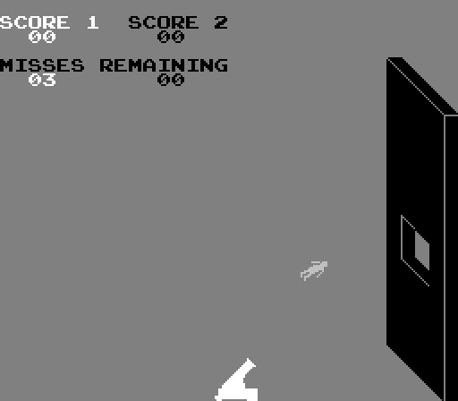

|
Cannonball - 1976 Atari Inc.
I have been asked about the very first game I worked on at Atari and how
my first creation took place. That would be the coin-op version of Cannon
Ball. The game was one of the very early microprocessor games created at
Atari in early 1976. I liked playing the game Stunt Cycle, a hardware only
game where you jumped a motorcycle over an ever increasing array of busses,
and wanted something that easy with increasing difficulty.
At that time, video games were almost completely created by four people:
The hardware engineer, the software engineer, the mechanical designer (cabinet
and controls) and a tech. There were some support people to the hardware
engineer for building prototypes, and the software engineers had computer
operators, but I did not even know about them at this time. The entire
game, graphics, and sound were created by the software engineer for the
most part.
I received a very basic motion object hardware (Black, White, and Grey
objects) with a simple bitmap stamp playfield and told to create a game.
I had not been at Atari long, so I had no idea HOW a game was built, just
that there were a few people there doing it. I was amongst the first 5
programmers so we sort of made it up as we went along.
Ok, so they set me up in a small lab next to my small office, and I got
to work. First, I created the graphics for a small man running, flying
through the air, and hitting the wall, including a “squish” animation,
and a man walking off holding his back. This was all done in 8x8 motion
objects, several put together to make a bigger object. So on graph paper,
I created these objects. I was no artist, but it was easy at that resolution.
I then did the same thing to create the cannon, the wall with a hole
in it, a powder keg, and a smoke blast! These I hand programmed into
a small
PROM (this was before EEPROM), so you wanted to be sure you did it right.
After I got the graphics installed, I sat down at a device called MicBug,
a 6800 (NOT 68000) Motorola “development” system. This was a small computer
board that had a cable that plugged into the processor socket of the game
board with some RAM, You entered instructions at a model 33 teletype! With
this device you could put in a breakpoint, alter memory and registers,
run and stop the processor. Very basic. So, with a small card with 6800
instructions on it, I began writing AND HAND ASSEMBLING my code on paper,
then I would type it into the model 33 teletype into MicBug, and save it
on paper tape. Editing was done by creating small “patch” paper tapes
with changes. I had a big box of changes, and would eventually punch
out a full
dump.
After a number of months, my boss suggested a review of the game. No problem.
We set it up. I had the game running, simple sounds, self test, and all
coin routines. I would guess about 75% of the project. A man came out,
stood next to the cannon and waited. On the opposite side of the screen
was a tall wall with a hole in it (that moved each round) Pulling on the
handle caused the powder keg to add powder to the cannon. The more powder,
the higher the shot. Releasing, the man jumped into the cannon. Push the
fire button and the man flew out of the cannon towards the hole. Make it
through and you scored. Miss, and you splat into the wall or floor and
limped off. Simple but fun.
Towards the end of the review, my boss asked if he could see my program
code listings. Listings? What listings did he mean? Well, as it turns
out, there was a way to create programs for games, I just never knew
about it.
Rather than hand assembling, one simply wrote the program on paper, handed
it to a computer operator who then edited it into an early DEC PDP computer
(like an 05 for example.). These operators would assemble the program
and produce a paper tape output and a listing of the assembled program.
Oh!
Then the program remained on the PDP. Later changes were simply scrawled
across the listings and edited by the same two people into the PDP, and
a new listing and paper tape was created. What took me months I probably
could have done in half that time. Oh well, so much for the easy way.
But since I was so far along, inputting this into the PDPs was going
to be
a long process. But a Model-33 teletype listings, lots of pen scrawls
and I was “up-to-date.”
Now the fun began. They wanted more sounds, and most of all, a sound when
the man hit the wall. So I set out to create a bone crunching, splat sound.
But how? All we had was a modulated white noise generator.. So we took
a microphone and a recording scope into the bathroom, and began throwing
wet towels onto the tile floor and recorded the waveform. I programmed
this into the noise generator and there it was. Every time the man hit
the wall, SPLAT! It was great. But the game was still too silent. What
about music? Not with this hardware, this was long before games could generate
music. So we added an Eight Track Tape unit on a relay and licensed some
circus music, so every time the game started, you heard the looping circus
music. The game operators where we tested this unit hated that after several
weeks, but the game actually did fairly well.
The kicker to this story was that during a later review, management said
they hated the splat sound and thought it was too graphic. Several months
later I started my next project, Sky Diver. Knowing they hated the splat
from Cannonball, I decided to have the divers over water and splash into
the water if they did not open their shoots. First review, two managers
said “…remember that sound in Cannonball when the man hit the wall? Can
we have that sound here instead of the splash? Let the man hit the ground
and splat!” Of course, I made it comical, but that is how the splat came
about in Sky Diver, which is another story.
Mame ROM link on
mamedb.com
|
|


|

{kind=link}